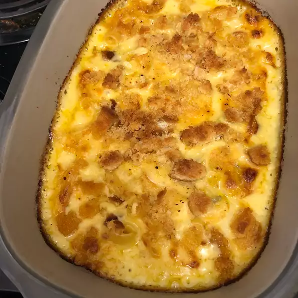

Dill Pickel macaroni and cheese

Description
Dill pickle relish adds a bit of crunch and a ton of flavor to traditional,
creamy baked macaroni and cheese.
Ingredients
- cooking spray
- 1 ½ cups elbow macaroni
- 3 tablespoons butter
- 3 tablespoons all-purpose flour
- 2 cups milk
- 1 cup shredded extra-sharp Cheddar cheese
- 1 cup shredded Monterey Jack cheese
- ⅓ cup dill pickle relish, well drained
- ¼ cup minced onion
- 1 teaspoon chile-garlic sauce (such as Sriracha®) (Optional)
- salt and ground black pepper to taste
- 1 slice bread
- 1 teaspoon butter
Steps
-
Preheat the oven to 350 degrees F (175 degrees C). Spray a 1 1/2-quart casserole dish
with cooking spray.
-
Bring a large pot of lightly salted water to a boil. Cook elbow macaroni in the boiling water,
stirring occasionally, until tender yet firm to the bite, about 7 minutes, making sure not to
overcook. Drain and set aside.
-
While the macaroni is cooking, melt 3 tablespoons butter over medium-low heat in a large
saucepan. Blend in flour and cook, stirring constantly, until mixture becomes paste-like and
light golden brown, about 5 minutes. Gradually whisk in milk and bring to a simmer over
medium heat. Cook and stir until thickened, 10 to 15 minutes.
-
Mix in Cheddar cheese and Monterey Jack cheese; stir until melted. Add dill pickle relish,
onion, Sriracha sauce, salt, and pepper to cheese mixture. Stir in cooked macaroni.
Pour mixture into the prepared casserole dish.
-
Butter both sides of bread and tear into large pieces. Blend in a food processor or
electric blender until you have crumbs. Spread on top of casserole.
-
Bake in the preheated oven until bubbling and browned on top, about 45 minutes.